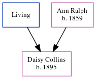

Delilah Emily Bixler (née Swain) 1909 - 1996
[ Home ] | [ Calendar ] | [ Surnames Index ] | [ Errors ] | [ Family History ]Delilah Swain, the wife of Harry Emerson Bixler (the fourth cousin twice-removed on the mother's side of Nigel Horne), was born in Allen, Indiana, USA on 4 Jan 19091,2,3,4. She married Harry in Fort Wayne, Indiana in 19465, which is also where she died on 13 Aug 19961,2,4.
Citations
- Social Security Death Index - Findmypast
- United States Billion Graves index - Findmypast
- United States Marriages - Findmypast
- United States Obituary Notices - Findmypast
- United States Marriages - Findmypast
Media
Delilah Emily Swain
Social Security Death Index - USBMD/SSDI/313148372
United States Obituary Notices - US/TRIB/035848870
United States Billion Graves index - US/BMD/BILLION/5/000028368963
Family Tree
Map
Generated by ged2site. Last updated on Jul 3, 2024
Known Issues
No records of living with anyone